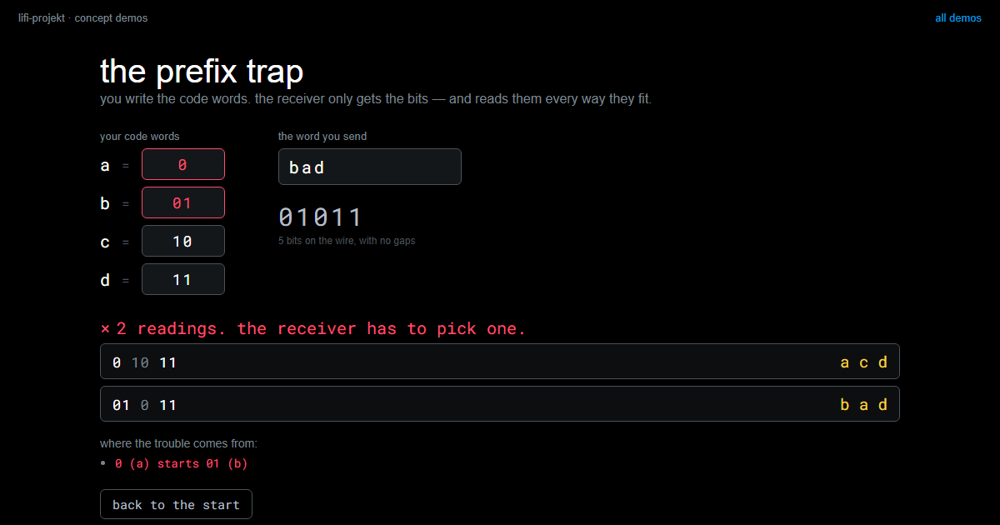
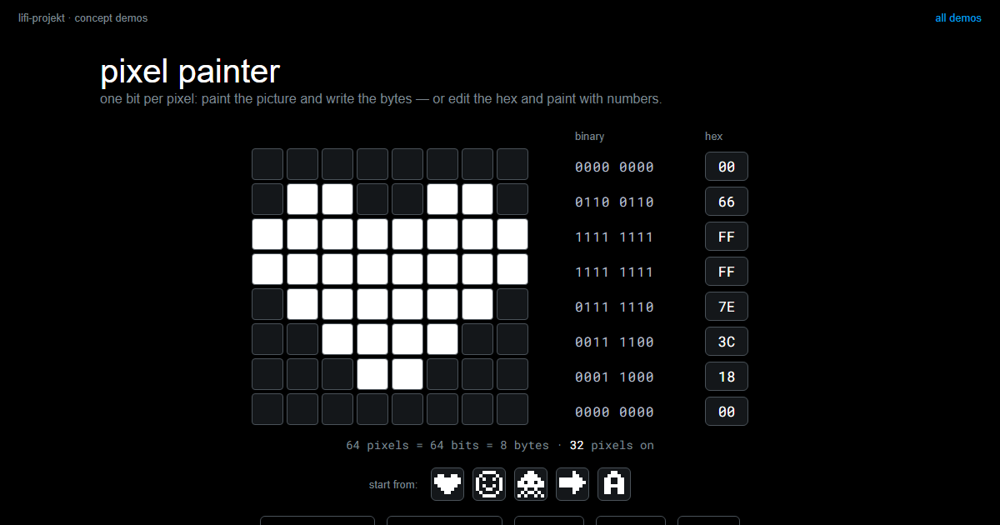

Code Systems
Summary
A code system is a table. On the left a character, on the right a sequence of symbols, and two parties who have agreed to read that table the same way. Nothing about the bits carries the meaning: the same eight bits are a letter, a shade of grey or a moment of sound, depending on which table you look them up in. That is why a code is worth nothing without its table, why two slightly different tables produce wrong words instead of error messages, and why your first real job in Challenge 2 is not writing code but writing down an agreement.
In this chapter, we address the following questions:
- What turns a letter into a sequence of symbols, and who decides which one?
- What are ASCII, Unicode and UTF-8, and why is there more than one of them?
- How many colour positions does a letter need, and what happens to the ones left over?
- How does the receiver know where one character ends and the next begins?
- Why can the same bytes be a text, a picture and a sound at the same time?
You need this concept for Challenge 2, where you build such a table yourself and send a word through it. It builds on Number Systems, where the arithmetic behind the table size comes from.
Explanation
There is a slab of granite in the British Museum, carved in 196 BC, that says the same thing three times: once in hieroglyphs, once in demotic script, once in Greek. For fourteen centuries nobody could read the top third of it. Not because the signs were lost, they had been lying there in plain sight the whole time, but because the agreement was lost: which sign means what. When Champollion finally worked it out in the 1820s, he did not decipher the stone so much as recover a table, one that had existed in people’s heads two thousand years earlier and had then quietly gone out of use.
That is the whole subject of this chapter, and it is worth holding on to before we get to bytes: the marks are not the message. The agreement is.
A code is a mapping, and it is agreed
A code system maps characters to sequences of symbols. That is the entire definition. The letter A is 01000001 if you have agreed on ASCII, a dot and a dash if you have agreed on Morse, and three colours in a row if you have agreed on your own alphabet.
{kind=link}
Three things a code is not, because all three get confused with it in everyday speech. It is not encryption: a code hides nothing, it is published on purpose so that both sides can use it. It is not compression: some codes happen to be economical, but making things smaller is not what they are for. And it is not source code, despite the name they share.
Letters are numbers
Inside the machine there are no letters, only numbers. ASCII is the oldest of these agreements still in daily use: capital A is 65, B is 66, lower-case a is 97, and each of those fits in one byte.
{kind=link}
Two details in that picture repay a second look. The 65 is not A’s position in the alphabet; the first 32 entries of the table are reserved for control characters, which is why the letters start so late. And lower-case a is 97, a completely different number, not a variant of the same one. To the machine, A and a are two characters that happen to look related to us.
The letter itself only comes back into existence when some program takes the number 65, looks it up in the same table, and draws the shape. Between the keyboard and the screen it does not exist at all.
When the table is too small
ASCII’s 128 slots are enough for English and nothing else. No umlauts, no Greek, no Cyrillic, no Chinese, no emoji.
{kind=link}
This is the same situation you will hit with your own codebook, only worldwide: the table was too small, so a bigger one was agreed. Two steps are worth keeping apart here, because they are constantly confused. Unicode says which number a character has. UTF-8 says how that number is written down as bytes, and it does so with a varying length: characters that come up all the time stay at one byte, rarer ones cost two, three or four. That second part is the same instinct that made Morse give the letter E a single dot, and it comes back further down, where it causes trouble.
Two tables, one message
Now the failure mode that will cost your team the most time, and the reason the Rosetta Stone is at the top of this page.
Suppose two of you typed up the code table separately, and in one copy the entries for n and m ended up swapped. Everything else matches.
{kind=link}
Nothing goes wrong, in the technical sense. No exception is raised, no checksum fails, no byte is corrupted. The receiver looks up every group of bits, gets a valid answer every time, and prints a word that looks exactly like a word. You typed sonne and somme came out, and the program has no way of knowing.
This is worth saying plainly because it runs against the instinct that computers complain when something is wrong. They complain when something breaks. A wrong agreement does not break anything: it is carried out correctly, and the result is nonsense with a clean face.
Your own codebook
For Challenge 2 you need a table from the 26 letters to sequences of your colours. How long does each sequence have to be? That arithmetic is from Number Systems and it runs the same way here.
{kind=link}
Two positions are not enough for 26 letters. Three are.
{kind=link}
The picture makes a point that the arithmetic hides: the table is much emptier than it feels. Those 38 spare code words are not waste, they are stock. When you decide halfway through the session that you want to send a space or a digit as well, they are already there, and you do not have to change the length of anything.
Which colour sequence goes with which slot is entirely yours to decide. The slots are what the arithmetic gives you; the assignment is the agreement.
The same table, read backwards
Sending means looking a character up and getting bits. Receiving means the same table read the other way.
{kind=link}
In your program you will probably build the reversed dictionary once and keep it next to the first. That is fine, and it is also the moment to be careful: two separately maintained tables are two things that can drift apart, and you have just seen what drift looks like. Better to derive the second from the first in one line than to type it twice.
There is one more thing your table does not cover, and it will show up within ten minutes of your first test: what happens to a character that is not in it. Someone types a space, an umlaut, a digit.
{kind=link}
Three answers are defensible: put it in the table, strip it before sending, or refuse with a clear message. Making no decision is not one of them, because then chance decides, or the program crashes in front of the class. And resist the comfortable thought that a space is nothing anyway. To the text it is a character like any other, and a receiver cannot invent a gap that was never sent.
Where does a character end?
Here is a code that looks harmless and does not work. Agree that a is 0, b is 01, c is 10, and send the sequence 010.
{kind=link}
The receiver sees a stream of bits with no gaps in it. It does not know whether the first 0 was already a whole character or the beginning of a longer one, and both readings are legal. The problem is not that the code words have different lengths. The problem is that the code word for a is the beginning of the code word for b, so there is nothing in the stream that marks the boundary.
You can try this yourself: write your own code words, send a word, and watch how many readings the receiver would have to choose between.
the prefix trapwrite your own code words, send a word, and see every reading the receiver could pick. get the list down to one and you have built a code that works.LiFi Project · concept demos
There are three ways out, and none of them is the official one.
{kind=link}
Fixed length is the simplest and the one we recommend for Challenge 2: every character is the same number of positions, so the receiver counts instead of guessing. A separator is what Morse uses, in the form of pauses between letters. The third option is the interesting one: if you make sure no code word is the start of another, you can keep variable lengths and still read the stream without ambiguity, because as soon as what you have read matches an entry, it can only be that entry.
So why would anyone want variable length at all, given the extra care it needs?
{kind=link}
Because fixed length gives no discount to letters you send constantly. Give the ten most common letters two positions and the rest four, and an ordinary German or English word gets shorter on average. On average, note, not always: a word made only of rare letters comes out longer. Follow that thought far enough and you arrive at Compression, which is a later session. For now the point is only that this is a choice, and both answers cost something.
The same bits, other meanings
Everything so far has been about text. But nothing in the argument was about text, and here is the proof. Take eight consecutive bytes out of the middle of a photograph.
{kind=link}
Read as text they are a capital M, a dollar sign, a capital E and five characters no editor can show you: that is exactly what you get when you open an image file in a text editor by mistake. Read as grey values they are eight brightnesses. Read as audio samples they are eight points on a wave. The bytes do not object to any of it. Character salad on your screen is not a malfunction; it is a wrong agreement, carried out correctly.
Pictures, then, are the same idea as text with a different table. One pixel is three numbers between 0 and 255, one for the red share, one for green, one for blue.
{kind=link}
The shares multiply rather than add, because every level of red can be combined with every level of green and blue: \(256 \cdot 256 \cdot 256 \approx 16.7\) million colours, which is 24 bits per pixel. The hex notation #ECAB03 is not a different system, only a shorter way of writing the same three bytes, two places each, as you saw in Number Systems.
For you this is closer than it looks. Those are the same three numbers your sender writes: led.set_color(236, 171, 3) mixes the colour on your LED the way a screen mixes it out of the same shares, and your sensor measures it back in the same three channels.
The bidirectional nature of that table is easiest to feel in its simplest form, one bit per pixel:
pixel painteran 8×8 picture, one bit per pixel: paint and watch the bytes write themselves, edit the hex and paint with numbers, then break a byte and see the damage.LiFi Project · concept demos
If the bytes do not say which reading is right, something else has to. Three things do, in practice: the file extension, which is the weakest because renaming a file changes nothing inside it; a header at the start of the file, which is what you will take apart in Files; and a type field in a message, which is what you will build yourselves into your frame in Challenge 3. That field is not bureaucracy. It is this section, in your own protocol.
Codes older than computers
None of this needed electricity. A barcode turns bar widths into digits. Sheet music turns position and shape into pitch and duration. Braille turns six raised dots into a character, and Louis Braille designed it in 1825, at sixteen. DNA turns three bases into an amino acid, and that particular table is the same in every living thing on the planet, which makes it both the oldest code system in this chapter and by far the most widely deployed.
Two of them are worth doing the arithmetic on.
{kind=link}
Braille is a six-bit code you read with your fingertips: each dot is raised or not, six dots, \(2^6 = 64\) patterns. DNA has four bases and three positions per amino acid, \(4^3 = 64\). And your colour alphabet has four colours and three positions, \(4^3 = 64\). The coincidence is not one. Whenever you combine a fixed number of positions with a fixed number of states per position, you are doing the same calculation, whether the positions are fingertips, molecules or flashes of light.
Which brings us back to the granite slab. Write your table down, and write it down once, for both of you.
Slides
The slides for this concept, right here. Page through them with the buttons in the top right corner, or click into the slides and use the arrow keys. The other buttons give you full screen, the slides in a new tab, and the deck as a PDF.
Practice questions
Try questions in the exam format here, with the answer and its reasoning shown right away.
Further reading
- Charles Petzold: Code. The Hidden Language of Computer Hardware and Software. Microsoft Press, 2nd edition 2022. Chapters 2 to 6 build a code from scratch, starting with a torch signalling through a window, and arrive at Braille and Morse before a single byte appears.
- Simon Singh: The Code Book. Fourth Estate, 1999. The chapter on Linear B and the decipherment of ancient scripts is the Rosetta story at length, and it shows what recovering a lost table actually takes.
- Joel Spolsky: The Absolute Minimum Every Software Developer Must Know About Unicode. https://www.joelonsoftware.com/2003/10/08/the-absolute-minimum-every-software-developer-absolutely-positively-must-know-about-unicode-and-character-sets-no-excuses/. Twenty years old and still the clearest short explanation of why text arrives broken.